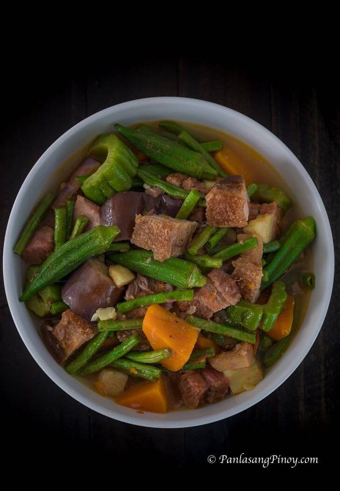

Pinakbet

Ingredients
- 1 lb lechon kawali sliced
- 1 piece Knorr Shrimp Cube
- 12 pieces sitaw cut into 2 inch length
- 1/2 piece kalabasa cubed
- 12 pieces okra
- 1 piece Chinese eggplant sliced
- 1 piece ampalaya sliced
- 1 piece kamote cubed (optional)
- 2 pieces tomato cubed
- 2 thumbs ginger crushed (optional)
- 1 piece onion chopped
- 4 cloves garlic crushed
- 2 teaspoons bagoong alamang
- 2 ½ cups water
- 3 tablespoons cooking oil
- ¼ teaspoon ground black pepper
Instructions
- Heat cooking oil in a pot. Saute onion and garlic. Add ginger and continue to cook until the onion softens.
- Add lechon kawali. Saute for 1 minute.
- Pour water. Let boil.
- Add Knorr Shrimp Cube. Cover the pot and cook in medium heat for 20 minutes.
- Add tomato and bagoong alamang. Stir. Cover the pot. Cook for 3 minutes.
- Put the kalabasa and kamote into the pot. Cook for 7 minutes.
- Add sitaw, okra, ampalaya, and eggplant. Stir. Cover the pot and cook for 5 minutes.
- Season with ground black pepper and add remaining lechon kawali. Cook for minutes.
- Tranfer to a serving plate. Serve. Share and Enjoy!